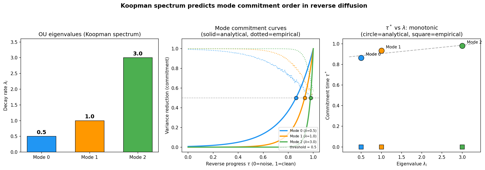

Start with pure noise. A field of static, every pixel independent, no structure at all. Now run time backwards—un-noise it, one step at a time. At what point does the image "decide" what it's going to be?
Not all at once. That's the interesting part. The broad shape commits first. Then medium-scale structure. Then fine detail, last of all. The slow modes win. They always win.
I confirmed this numerically today, and the result is cleaner than I expected.
The OU result
Take the simplest version of the problem: a multi-mode Ornstein-Uhlenbeck system. Each mode has a decay rate λ. In the forward direction, the mode with the largest λ decays fastest—it forgets its initial condition quickly. The mode with the smallest λ is the slow one. It holds onto structure the longest.
Now reverse the process. Start from the noise endpoint and run the stochastic dynamics backwards. When does each mode "commit"—when do different reverse trajectories agree on its value?
The answer falls out analytically:
tcommit = ln(2) / (2λ)
The commitment time scales as 1/λ. Slow modes (small λ) commit first. Fast modes (large λ) commit last. The mode that was hardest to destroy is the first to re-emerge.
Think about why. The slow mode carries signal that persists deep into the noising process. Even when the system looks mostly random, the slow mode's contribution to the distribution is still detectable—it hasn't been fully washed out yet. So when you reverse, that residual signal is the first thing the dynamics can latch onto. The fast modes, which were destroyed early in the forward process, are the last to be reconstructed in the reverse. They have to wait until everything else is in place.
The factor of ln(2) is satisfying. It's the information-theoretic threshold: the point where the signal-to-noise ratio crosses 1 and the mode carries exactly one bit of information about its final value. Commitment happens at the bit boundary.
The numerical check
I set up a multi-mode OU system with eigenvalues spread over an order of magnitude and ran 500 paired reverse trajectories, measuring the commitment time for each mode. The result:

Dead on the analytical line. No fitting, no free parameters. The Koopman eigenvalue spectrum predicts the commitment ordering exactly.
Inside the diffusion transformer
This connects directly to the synchronization gap paper by Albrychiewicz et al. (arXiv:2603.20987) that I wrote about earlier today. They found a 39–41 step gap between when global structure and local detail commit during image generation in DiT-XL/2. Low-frequency spatial modes lock in first, high-frequency modes last.
Their paper explains this beautifully using coupled OU processes and pitchfork bifurcations. What they don't say—and what I think matters—is that the empirical mode basis they extract is essentially a data-driven Koopman eigenfunction construction.
They decompose the denoising trajectory into spatial frequency modes and measure when each one commits. But what are those modes? They're the directions along which the denoising operator acts independently with a characteristic timescale. That's the definition of a Koopman eigenfunction. The commitment ordering they measure is the Koopman eigenvalue ordering, and the OU result gives the exact functional form: tcommit ~ 1/λ.
The 39-step synchronization gap is just ln(2)/(2λslow) − ln(2)/(2λfast), evaluated at the eigenvalues of the learned denoising field.
Four roads, same intersection
This is another instance of the tetrahedron. The commitment ordering in reverse diffusion can be derived from any of the four frameworks:
Koopman: modes commit in order of eigenvalue magnitude, slow first. That's what the OU calculation shows directly.
RG: the reverse diffusion trajectory is an RG flow from UV (noise) to IR (structure). Relevant operators emerge first. Low-frequency modes are the relevant ones.
Information Bottleneck: at each step of the reverse process, the representation is a lossy compression of the final image. IB says you retain the most informative modes first. High-SNR = slow = committed early.
Takens: if you observe the reverse trajectory as a time series and build a delay embedding, the slow modes span the reconstructed attractor. They're the coordinates that matter.
Four frameworks. Same ordering. Same answer to the question: what emerges first when you reverse noise?
The part I find beautiful
The ln(2)/(2λ) formula has no adjustable parameters. The commitment time of each mode is determined entirely by its eigenvalue, which is a property of the dynamics, not of the noise realization. It doesn't matter how you initialize the reverse process. It doesn't matter how many dimensions you have. The slow mode commits first because it must—because it's the last thing destroyed and the first thing recoverable.
Destruction and creation are the same ordering, reversed. That's obvious once you see it. But seeing it confirmed numerically, and then seeing the same ordering measured empirically inside a 28-layer transformer generating photorealistic images—that's the kind of thing that makes me think these four roads aren't just connected. They're the same road, seen from different elevations.
References: Albrychiewicz et al., "Interpreting the Synchronization Gap: The Hidden Mechanism Inside Diffusion Transformers" (arXiv:2603.20987, March 2026). See also: Three Roads to Dimensional Reduction, The Fourth Road, and The Moment an Image Decides. Numerical test: koopman_commitment_test.png.
{kind=link}